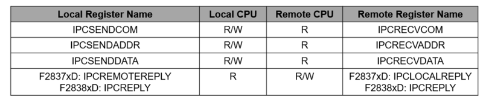
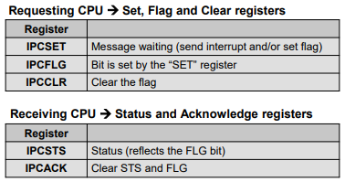
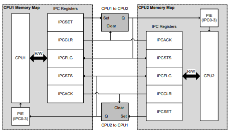

Interprocessor Communications (IPC)#
Introduction#
The Inter-Processor Communications (IPC) module allows communication between two CPU subsystems. In a dual-core device, for example, the IPC module allows communication between CPU1 and CPU2.
Note:
This module is only applicable to multi-core C2000 devices. Please see your device documentation to determine if this moduel applies to your device.
Features of IPC#
Allows communications between the two CPU subsystems:
IPC flags and interrupts
IPC command registers
Flash pump semaphore
Clock configuration semaphore
Free-running counter
All IPC features are independent of each other
IPC Message Registers#
Provides very simple and flexible messaging
Dedicated registers mapped to both CPU’s
Below are examples from C28x devices

The definition (what the register content means) is up to the application software
TI’s IPC-Lite drivers use the IPC message registers
Interrupts and Flags#
IPC Flags and Interrupts#
CPU to CPU: 128 flags with 4 interrupts with different IPC0 flags

When the sending CPU wants to inform the receiver that a message is ready, it can make use of an interrupt or flag. There are identical IPC interrupt and flag resources on all cores.
4 Interrupts: There are 4 interrupts that CPU1 can send to CPU2 (and vice-versa) through the interrupt controller module. Each of the interrupts has a dedicated vector within the interrupt controller.
Messaging with IPC Flags and Interrupts: CPU-to-CPU#

IPC Data Transfer#
Basic option - no software drivers needed and easy to use!
Use RAMs to transfer data between processors at a known address
Use the IPC flag registers to tell the other processor that the data is ready
At the most basic level, the application does not need any separate software drivers to communicate between processors. It can utilize the RAM blocks to pass data between processors at a fixed address known to both processors. Then the sending processor can use the IPC flag registers merely to flag to the receiving processor that the data is ready. Once the receiving processor has grabbed the data, it will then acknowledge the corresponding IPC flag to indicate that it is ready for more messages.
IPC Software Solutions#
There are several options to use the IPC on the device.
Basic option:#
A very simple option that does not require any drivers. This option only requires IPC registers to implement very simple flagging of messages passed between processors.
Driver options:#
If the application code needs a set of basic IPC driver functions for reading or writing data, setting/clearing bits, and function calls, then there are 2 IPC software driver solutions provided by TI.
IPC Software Solutions Summary#
No software drivers needed
Uses IPC registers only (simple message passing)
Easy-to-use DriverLib functions and software examples